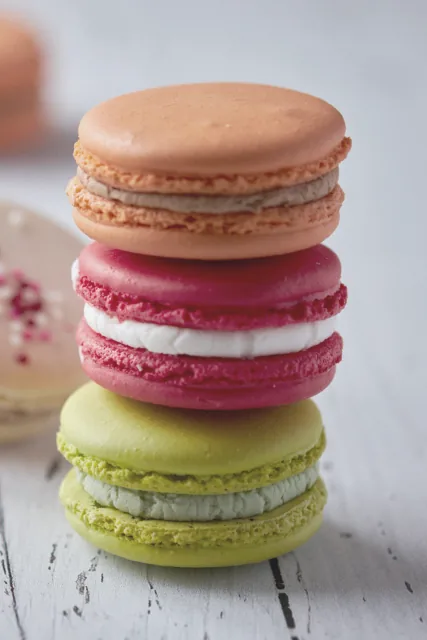
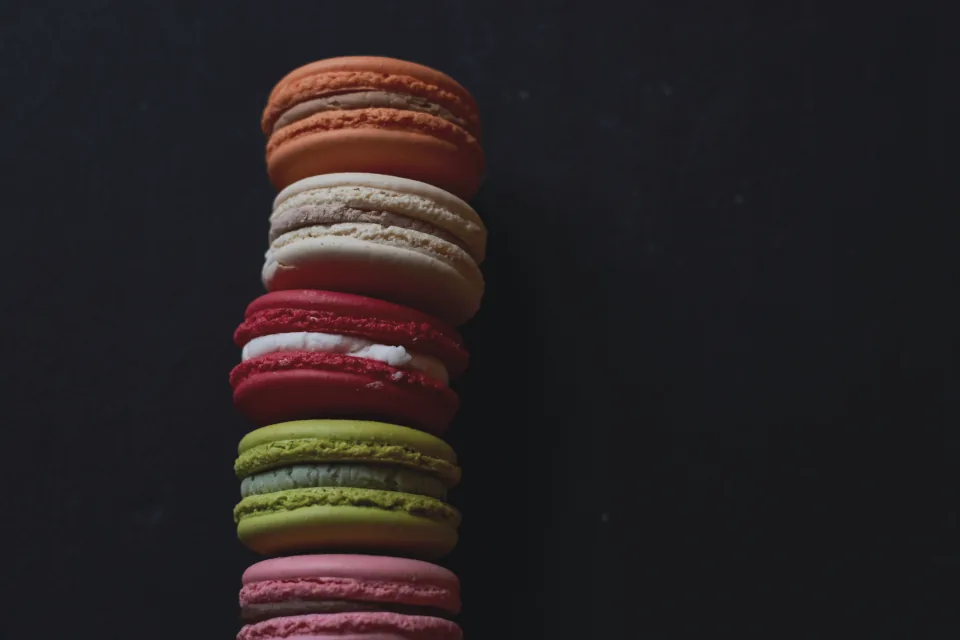
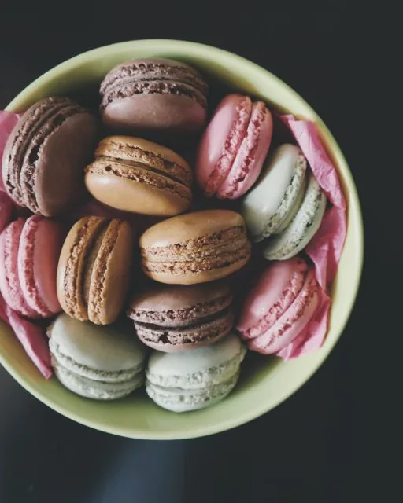

COLOR No. T-01
ROSE PÉTALEローズ・ペタル

ダマスクローズの香りを、ライチの甘酸っぱさで包んだ花びら色。最初のひと口はふわりと軽く、後味にだけ香りを残します。
- SHELL
- アーモンドプードル / 卵白 / 粉糖
- GANACHE
- ローズウォーター / ライチピュレ / ホワイトチョコレート
- NOTE
- ブルガリア産ダマスクローズ
Pairingシャンパーニュ、ルイボスティー
1 piece¥420税込
Details：ローズ・ペタル
その日の装い、贈る相手の横顔、季節の光。TEINTE（タント）は、ひと粒ずつ“色”から仕立てるマカロンのアトリエです。
色見本帳をめくるように、8つの色を選んでください。どの色にも、それだけの理由と味があります。
Collection — Autumn / Winter
殻（コック）の色、ガナッシュの香り、合わせたい飲みもの。
TEINTEのマカロンは、すべて色番号で管理しています。
ページをめくるように、右へお進みください。
COLOR No. T-01
ダマスクローズの香りを、ライチの甘酸っぱさで包んだ花びら色。最初のひと口はふわりと軽く、後味にだけ香りを残します。
Pairingシャンパーニュ、ルイボスティー
1 piece¥420税込
Details：ローズ・ペタルCOLOR No. T-02

完熟フランボワーズのジャムを、カカオ70%のガナッシュで縁取りました。深い赤は、夜の装いのためのひと粒。
Pairing赤ワイン、ほうじ茶
1 piece¥440税込
Details：フランボワーズ・ノワールCOLOR No. T-03

干しあんずのコンフィチュールに、ほんのひと枝のタイム。夕方の光のような、乾いたオレンジ色です。
Pairing白ワイン、ダージリン
1 piece¥420税込
Details：アブリコ・タンCOLOR No. T-04

シチリア・ブロンテ産ピスタチオを、自家焙煎してプラリネに。こっくりとしたオリーブグリーンは、定番にして最も人気の色。
Pairingエスプレッソ、煎茶
1 piece¥480税込
Details：ピスターシュ・シシルCOLOR No. T-05

高知県産の柚子果汁と、すりおろした生姜。黄色い殻を割ると、香りがまっすぐに立ち上がります。
Pairingスパークリング日本酒、ジャスミン茶
1 piece¥420税込
Details：ユズ・ジャンジャンブルCOLOR No. T-06

南仏のラベンダーを蜂蜜に移して、やわらかなバタークリームに。煙るような薄紫は、眠る前の小さなご褒美に。
Pairingカモミールティー、ロゼ
1 piece¥440税込
Details：ラヴァンド・ミエルCOLOR No. T-07

浅煎りのエチオピアを水出しにして、ヘーゼルナッツのプラリネと合わせました。ミルクを注いだコーヒーの色。
Pairingカフェオレ、ウイスキー
1 piece¥440税込
Details：カフェ・プラリネCOLOR No. T-08

アールグレイを牛乳でじっくり煮出したミルクティーのガナッシュ。何色にも寄り添う、TEINTEの“白シャツ”のような色。
Pairingアールグレイ、ミルク
1 piece¥420税込
Details：テ・オ・レ02 — Atelier

パタンナーとして服をつくっていた店主が、パリの小さな製菓学校で出会ったのがマカロンでした。生地を裁ち、色を合わせ、かたちを整える。その手順は、洋服を仕立てる仕事とよく似ていたといいます。
TEINTEでは、まず色を決めてから味を組み立てます。着色料に頼らず、ビーツやターメリック、ピスタチオなど素材そのものの色をアーモンドの生地に移し、一日に焼くのは8色・各120粒まで。殻を焼いたあとは一晩寝かせ、ガナッシュとなじんだ翌日にだけ店頭に並べます。
Atelier TEINTE
Chef pâtissière 〇〇 〇〇
03 — Gift Box
贈る人の“好きな色”を、箱に仕立てます。オフホワイトの紙箱に、選んだ色の帯を一本。リボンは使わず、色だけで記憶に残るギフトに。
BOX — 04
4色を一列に。手土産や、自分へのご褒美に。
¥1,800
BOX — 08
全8色の色見本帳セット。はじめての方へ、まずこの箱を。
¥3,600
BOX — 12
好きな服、花束、記念日の色をうかがい、色の配列と帯色を仕立てるオーダーボックス。3日前までのご予約制。
¥5,800〜
04 — Journal
05 — Shop

— Order & Contact
ギフトボックスのご予約、好きな色で仕立てるオーダーボックス「Sur Mesure」、法人ギフトのご相談はこちらから。
お問い合わせ・ご予約